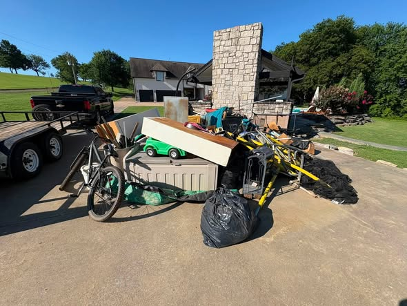
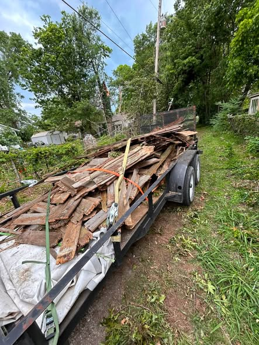
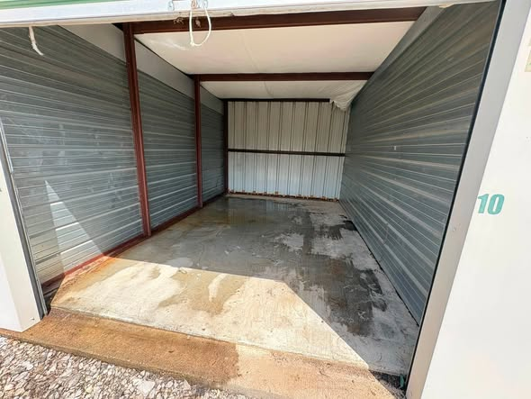
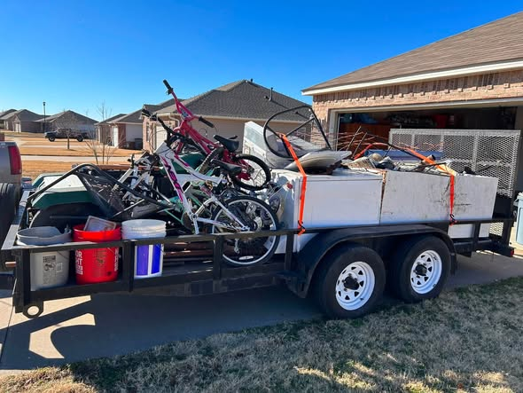
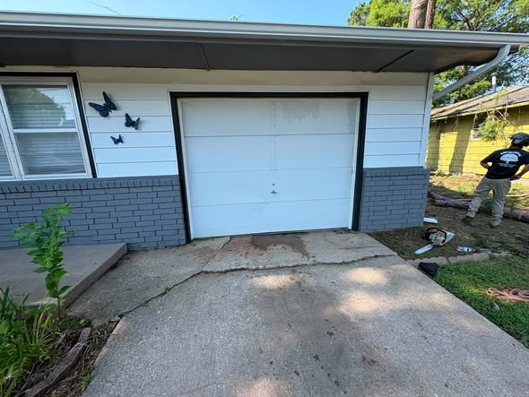
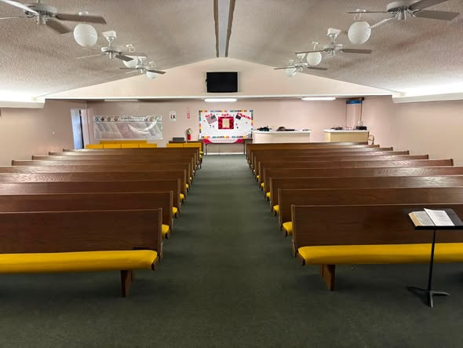

Word around town: J.S Junk Removal hauls it off so you don't have to
J.S Junk Removal is a locally owned crew serving the Tulsa area, handling everything from single-item pickups to whole-property cleanouts. We show up when we say we will, treat your place like it's our own, and haul off the mess so you can move on with your day.
Point us at the couch, the fridge, or the pile in the driveway, and we'll load it up and cart it off.
Garages, attics, sheds, or a whole house — we'll clear it out top to bottom and sweep up after.
Old fencing, storm damage, torn-out flooring, and yard waste hauled away in one trip.
When a place needs emptying for a sale or a move, we handle it start to finish with a light touch.






"This is where your real Google and Facebook reviews shine — front and center."
"Folks already say great things about you online. A website puts it to work."
"We pull in your genuine 5-star reviews so new customers trust you instantly."